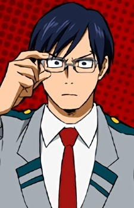
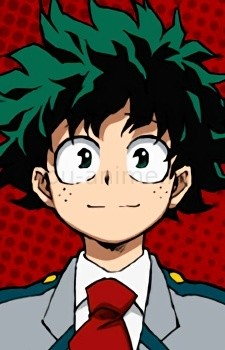

Изуку Мидория

Молодой человек, который в эпоху героев и причуд попал в 20% населения, родившихся без причуды. Из-за отсутствия причуды стал объектом насмешек и издевательств, поэтому вырос робким, застенчивым и крайне неуверенным в себе. Обожает героев и старается
изучать их способности, внося информацию в блокнот, который постоянно держит при себе. Всегда готов помочь и бросается с головой в опасность, даже если это может стоить ему жизни
Очако Урарако

Решила стать профессиональным героем, чтобы помочь родителям в финансовом положении. Отяко имеет небольшие кружочки на подушечках пальцев обеих рук, касаясь которыми какого-либо объекта, способна свести его вес к минимуму. При соединении подушечек между
собой эффект невесомости отменятся. При поднимании объектов со слишком большим весом испытывает приступы тошноты.
Кацуки Бакуго

Взрывной и неудержимый, как и его причуда, Кацуки стремится стать сильнейшим героем во всем мире, всячески доказывая это грубой силой. Был одним из тех, кто вечно издевался над Идзуку, называя его и подобных ему «просто выбоинами на его пути к величию».
Он же придумал кличку «Дэку» для Идзуку
Тэнья Ида

Ученик академии Юэй. Юноша, который может показаться излишне дотошным и невыносимым, но на самом деле просто пытающийся сделать всё правильно и рассудительно, даже если это самая мелочь. Является выходцем из знаменитой семьи героев. Увидев действия Идзуку
на вступительном экзамене, проникся его чувством справедливости и впоследствии стал ему другом и соперником.